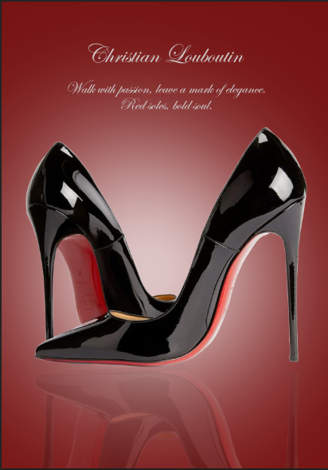

Christian Lobitons

Neden Bu Ürün Tanıtımını Hazırladım? Hem görsel estetik hem de duygusal etki açısından güçlü bir tanıtım, ürünün değer algısını yükseltir ve müşterilerin satın alma kararını hızlandırabilir. Bu reklam görselinin hazırlanmasında kullanılan temel Photoshop teknikleri şunlardır:
- Ürün İzolasyonu ve Kesme (Clipping): Ayakkabıların orijinal fotoğrafından özenle kesilerek (maskelenerek), arka plandan tamamen ayrılması sağlanmıştır. Kesim işlemi, parlak yüzeylerin keskin hatlarını koruyacak şekilde yapılmalıdır.
- Yansıma Efekti (Reflection): Ayakkabıların hemen altında, zeminde bir yansıma efekti bulunmaktadır. Bu efekt, ürünün pürüzsüz ve parlak bir yüzey üzerinde durduğu izlenimini verir, derinlik katar ve lüks hissini güçlendirir. Bu, genellikle ayakkabı katmanının kopyalanıp dikey olarak çevrilmesi, altının soluklaştırılması (Opacity düşürme) ve bir maske ile yumuşak bir geçiş sağlanmasıyla yapılır.
- Parlaklık ve Kontrast Düzenlemeleri: Rugan yüzeyin yüksek parlaklığını ve cilalı görünümünü vurgulamak için parlaklık (Brightness) ve kontrast ayarları hassasça yapılmıştır. Işıkların keskin yansımaları (Highlights) korunmuştur.
- Parlaklık ve Kontrast Düzenlemeleri: Rugan yüzeyin yüksek parlaklığını ve cilalı görünümünü vurgulamak için parlaklık (Brightness) ve kontrast ayarları hassasça yapılmıştır. Işıkların keskin yansımaları (Highlights) korunmuştur.
Özetle: Bu proje, ürün fotoğrafçılığı, detaylı maskeleme, yansıma oluşturma ve uygun tipografi kullanımı ile birleşerek güçlü bir marka imajı oluşturan başarılı bir görsel tasarım örneğidir.